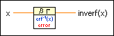

Inverse Error Function VI
Owning Palette: Error Functions VIs
Requires: Full Development System
Computes the inverse of the error function associated with a normal distribution.
This VI calculates the Error Function VI in reverse.

 Add to the block diagram Add to the block diagram |
 Find on the palette Find on the palette |